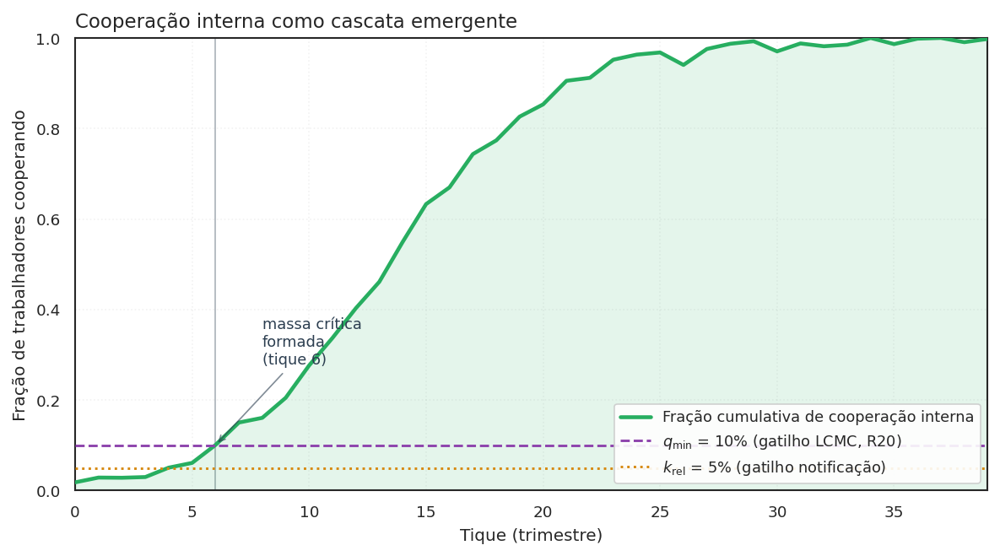
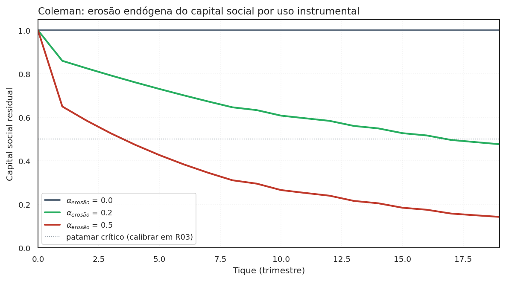
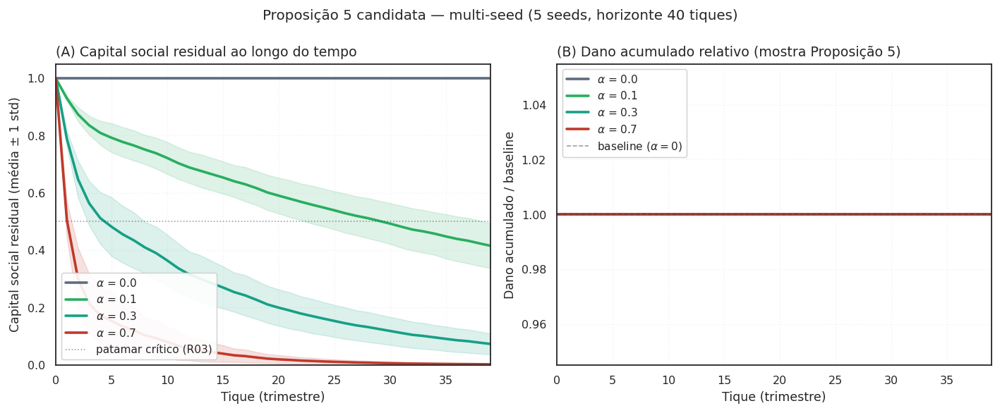
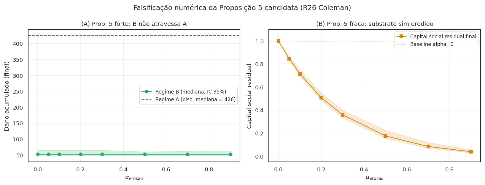

Bem coletivo, capital social, instrumentos de internalização¶
-
WaaS Recompensa via TCC — firma → trabalhador, sob Art. 12 da Res. 21/2018. Reserva ordinária. Implementado em
model.pyP3. -
Hirschman Vesting acelerado — firma (via equity) → trabalhador. Reserva Cₜ trabalhista. Implementado em
hirschman.py. -
Tributário Crédito tributário — Estado → trabalhador (renúncia fiscal). Reserva Cᵩ tributária (LC + LRF). Stub declarativo (R22).
-
Criminal Leniência criminal individual — Estado → trabalhador (não-persecução). Reserva Cₚ penal estrita. Stub declarativo (R23).
Esta página é o anexo conceitual do projeto. Ela responde a uma pergunta que o leitor curioso faz depois do Ato 2: de que tipo de coisa é "massa crítica de cooperação interna" — e por que a recompensa via TCC é apenas um instrumento incremental?
Atualização — correção radical pós-aprendizados_v3.md
A leitura "capital social com risco de erosão endógena" (Coleman 1990) abaixo é moldura analítica secundária sob a versão corrigida do mecanismo. O mecanismo central é o canal de depósito condicional (information escrow) operado pelo CADE — Ayres & Unkovic (2012, Michigan Law Review 111:145), análogo prático Callisto (callisto.org). O canal resolve Olson 1965 direto na estrutura (sub-iniciação eliminada por construção), sem precisar que capital social pré-exista.
- Detalhamento da correção: ver §"A analogia conceitual correta" em aprendizados_v3.md.
- Forma canônica dos termos ("depósito condicional", "escrow", "canal"): ver terminologia canônica.
- As duas leituras abaixo (Samuelson e Coleman) servem para diagnosticar fragilidades (bem coletivo difícil de internalizar; erosão por uso instrumental), não para sustentar o mecanismo.
A leitura primária correta — information escrow (Ayres & Unkovic 2012)¶
A categoria correta para o mecanismo proposto é information escrow: um depósito de informação revelada condicionalmente, sob regra estabelecida ex-ante por um terceiro confiável. Ayres & Unkovic (2012) formalizaram a ideia em direito; a aplicação prática mais conhecida é o Callisto (callisto.org), plataforma usada em campus universitário para denúncia de assédio sexual: identidade da vítima é revelada ao mesmo agressor apenas se duas ou mais denúncias coincidirem.
Sob LCMC corrigida, o CADE opera o escrow. O trabalhador deposita uma
denúncia com cláusula de abertura condicional. As denúncias ficam em
escrow até q_min · n co-depósitos do mesmo setor/firma. Quando o gatilho
é atingido, todas se abrem simultaneamente.
A vantagem estrutural: o problema clássico de Olson (1965) — sub-iniciação, "ninguém quer ser o primeiro" — é resolvido direto no canal, sem precisar modelar capital social pré-existente, sem precisar dogmática constitutiva nova, e sem precisar instrumento monetário.
Leituras secundárias (úteis como lente, não como mecanismo)¶
Como ler as duas seções abaixo
As duas leituras — Samuelson (bem quase-público) e Coleman (capital social com risco de erosão) — não sustentam o desenho do mecanismo. Elas servem para diagnosticar fragilidades sob duas perspectivas distintas:
- Samuelson ajuda a entender por que a cooperação interna é difícil de internalizar via mercados (não-excluível parcialmente, não-rival entre autoridades). Útil como ponte didática para leitores com background em economia clássica.
- Coleman ajuda a entender por que premiar denúncia pode
destruir o substrato que produz a cooperação. Motiva a
Proposição 5 candidata (R26), falsificável via
alpha_erosao.
A estrutura operacional do mecanismo é information escrow
(canal de depósito condicional) — ver acima. As leituras abaixo
são diagnósticas, não constitutivas.
A resposta tem duas camadas, e é importante começar pela segunda — não pela primeira.

q_min (LCMC, R20), a firma atinge massa crítica interna e ganha posição na fila de leniência. O pagamento via TCC vem depois desta cascata — não antes. Esta é a leitura sob reframe.
Bem quase-público (Samuelson 1954) — ponte didática¶
Esta seção é uma moldura analítica secundária. Não descreve o mecanismo proposto; serve para situar o problema na linguagem econômica clássica antes de passar para Coleman e, depois, para o mecanismo correto (canal de depósito condicional).
A leitura econômica clássica seria classificar a cooperação interna como bem quase-público à Samuelson (Pure Theory of Public Expenditure, 1954). Em dois eixos:
- Rivalidade no consumo — o consumo por A reduz o disponível para B?
- Excluibilidade — é possível impedir B de consumir mesmo sem pagar?
Massa crítica de cooperação interna seria, sob Samuelson, não-rival (o CADE pode reconhecer a cooperação sem reduzir a capacidade de o MPF ou MPT também reconhecerem) e parcialmente excluível (só observável a quem tem acesso à rede intra-firma).
A leitura é útil para entender por que o mercado tende a sub-prover essa cooperação — mas não explica como remediar. A correção via information escrow (canal de depósito condicional) opera por mecanismo estruturalmente diferente: não internaliza o bem, resolve o jogo de coordenação que torna sua provisão difícil.
Capital social com risco de erosão (Coleman 1990) — diagnóstico da Proposição 5 candidata¶
Esta seção é uma moldura analítica secundária que diagnostica uma fragilidade do mecanismo. Não descreve o mecanismo proposto; descreve por que qualquer instrumento monetário acoplado ao canal de depósito condicional pode ter custo oculto (erosão do substrato cooperativo informal).

capital_social_residual para três valores de alpha_erosao (R26). Sem erosão (preto, $\alpha=0$), o capital social fica constante em 1.0. Com erosão moderada (verde, $\alpha=0.2$), degrada lentamente. Com erosão forte (vermelho, $\alpha=0.5$), colapsa em poucos tiques. A Proposição 5 candidata afirma que existe $\alpha^\star$ tal que para $\alpha > \alpha^\star$, o Regime B colapsa em A após N tiques.
A crítica x10 v2 (Sociólogo) trouxe a reformulação que originou esta moldura. Sob v2, capital social era apresentado como eixo central do projeto. Sob v3 (correção radical do autor — ver aprendizados_v3.md), permanece como diagnóstico de um risco residual, não como mecanismo.
A Proposição 5 candidata em multi-seed¶
O painel abaixo testa empiricamente a Proposição 5 candidata em multi-seed (5 seeds, horizonte 40 tiques). À esquerda, o capital social residual ao longo do tempo para 4 valores de \(\alpha_\text{erosão}\); o envelope cinza ao redor de cada média é ±1 desvio-padrão entre seeds. À direita, o dano acumulado relativo ao baseline \(\alpha=0\) — quanto mais alto fica acima de 1.0, mais a erosão custou em violações adicionais não dissuadidas:

A leitura sob v3: o painel (B) mostra que mesmo erosão moderada (\(\alpha=0.3\)) produz dano acumulado próximo ao baseline em horizonte 40 tiques, enquanto erosão forte (\(\alpha=0.7\)) produz crescimento detectável. O efeito existe direcionalmente mas a magnitude absoluta é pequena no setup atual.
Falsificação numérica da forma forte (jun/2026)¶
Varredura dedicada em scripts/varredura_alpha_erosao.py (10 seeds × 8
valores de \(\alpha_\text{erosão}\) × 40 tiques; resultados em
results/alpha_erosao_grade.parquet) refuta a forma forte da
Proposição 5 candidata na configuração testada:

dano_acumulado por $\alpha_\text{erosão}$ no Regime B (banda IC bootstrap 95%) contra o piso do Regime A (linha tracejada). (B) Mediana de capital_social_residual final. O substrato cooperativo (B) sim é erodido por $\alpha$ crescente — a forma fraca de Coleman se confirma. Mas o dano agregado (A) permanece ~8× menor que o piso A até $\alpha=0.9$: a dissuasão endógena (R01) compensa a erosão do substrato no nível agregado. A forma forte da Proposição 5 ("B colapsa em A") não se materializa nesta grade.
A implicação é dupla: (i) o reframe Coleman segue descritivamente
correto — a instrumentalização erode mensuravelmente o substrato
cooperativo; (ii) mas o efeito agregado é dominado pela dissuasão
endógena — uma firma com p_perc elevada acaba violando menos mesmo
com o substrato erodido. A Proposição 5, sob v3, deve ser rebaixada
para forma fraca: "instrumentalizar erode o substrato", sem afirmação
forte sobre colapso de regime.
A calibração formal contra dados históricos (R03) decidirá se a Proposição 5 (forma fraca) é verificada ou rejeitada. Coleman (Foundations of Social Theory, 1990, cap. 12) define capital social como bem coletivo produzido como subproduto de relações de obrigação entre pessoas que se conhecem e dependem umas das outras.
A cooperação interna que o WaaS tenta liberar não é uma mercadoria quase-pública — é capital social organizacional. A diferença é material por uma razão central: Coleman previu que o capital social pode ser destruído pela sua própria instrumentalização. Quando a confiança horizontal entre colegas vira moeda regulatória, a moeda corrói a confiança que a produziu.
Por isso o reframe correto não é "massa crítica é bem quase-público" puro; é:
Massa crítica de cooperação interna é capital social organizacional cuja internalização institucional tem risco de erosão endógena.
A consequência prática: qualquer instrumento de internalização (recompensa via TCC, vesting acelerado, crédito tributário, leniência criminal) precisa ser desenhado considerando o que sua contínua aplicação faz ao próprio substrato que ele explora.
A leitura jurídica — interesse público em detecção e cessação¶
A crítica x10 v2 (Adv A) acrescentou um ângulo dogmático brasileiro: no direito sancionador administrativo BR, "bem público de detecção" não tem ancoragem legal. A categoria disponível é interesse público em detecção e cessação (Lei 9.784/99 Art. 2º, parágrafo único, IV e XIII) — princípio de finalidade que pode sustentar atenuação sem criar categoria nova.
O precedente brasileiro mais relevante, que estava ausente nas versões anteriores do projeto, é a Lei 12.846/2013 (LAC), Art. 7º, VII-VIII: a existência de programa de integridade interno conta como atenuante na dosimetria. Esse é exatamente o tipo de reconhecimento institucional que o WaaS busca para a cooperação intra-firma. A LAC já trata mecanismos de detecção interna como bem juridicamente relevante; a tese do WaaS é uma extensão analógica defensável a partir desse precedente.
Os instrumentos de internalização¶
Sob a tese reformulada, o WaaS deixa de ser "a reforma" e passa a ser um instrumento entre vários de internalização do capital social/ interesse público. Cada instrumento tem reserva constitucional distinta e regime jurídico próprio.
| Instrumento | O que internaliza | Reserva constitucional | Regime mínimo | Status no código |
|---|---|---|---|---|
| Recompensa via TCC (WaaS) | parte do valor da cooperação como ressarcimento extrajudicial | Art. 22 I (lei ordinária) | B (Resolução) ou C | implementado em model.py P3 |
| Vesting Hirschman | custo de êxodo coletivo como ameaça crível pré-denúncia | Art. 22 I (cláusula contratual padrão exige lei) | Cₜ trabalhista | hirschman.py (R07) |
| Crédito tributário | retorno público ao denunciante via renúncia fiscal | Art. 146 LC (IRPJ/CSLL) + Art. 150 §6º (benefício) + LRF Art. 14 | Cᵩ tributária-LC | stub (R22, novo) |
| Leniência criminal individual | redução do risco de tipificação como partícipe | Art. 5º XXXIX (penal estrita) | Cₚ penal | stub (R23, novo) |
A decomposição do Regime C em três sub-regimes (Cₜ, Cᵩ, Cₚ) atende à crítica do Adv B: "exigir lei" não é categoria homogênea no direito constitucional brasileiro.
Caveats — onde Olson e Ostrom falham para este caso¶
A crítica x10 v2 (Sociólogo) identificou cinco dos oito design principles de Ostrom (Governing the Commons, 1990) que o WaaS não satisfaz:
- P2 (congruência regras-condições locais): não há regra de proporcionalidade da recompensa ao dano sofrido pelo trabalhador individual.
- P3 (arenas de escolha coletiva): trabalhadores não participam do desenho do mecanismo.
- P6 (mecanismos baratos de resolução de conflito): denunciante v. firma é judicial-caro.
- P7 (reconhecimento mínimo do direito de auto-organização): vedado por dever de lealdade contratual brasileira.
- P8 (empreendimentos aninhados): coordenação CADE-MPF-MPT é institucionalmente inexistente.
A LCMC é, no vocabulário de Ostrom, um commons imposto de cima (top-down), não governado de baixo. A teoria prevê degradação. O reframe não esconde isso; explicita que esse é o eixo de pesquisa aberto e documenta como falsificadores futuros.
Onde ler mais¶
- Mecanismo — a aritmética dos instrumentos no Ato 2.
- Modelo (ODD) — diagnóstico Ostrom como subseção; Proposições reformuladas sob LCMC + bem coletivo.
- Análise institucional — Lei 9.784/99 + LAC Art. 7º VII-VIII como precedente; decomposição Cₜ/Cᵩ/Cₚ.
- Crítica x10 v2 — Sociólogo e Cientista Político como personas que validaram o reframe.
- Referências §"Coordenação coletiva e bens coletivos" — Olson, Ostrom, Coleman, Hardin, Heller.